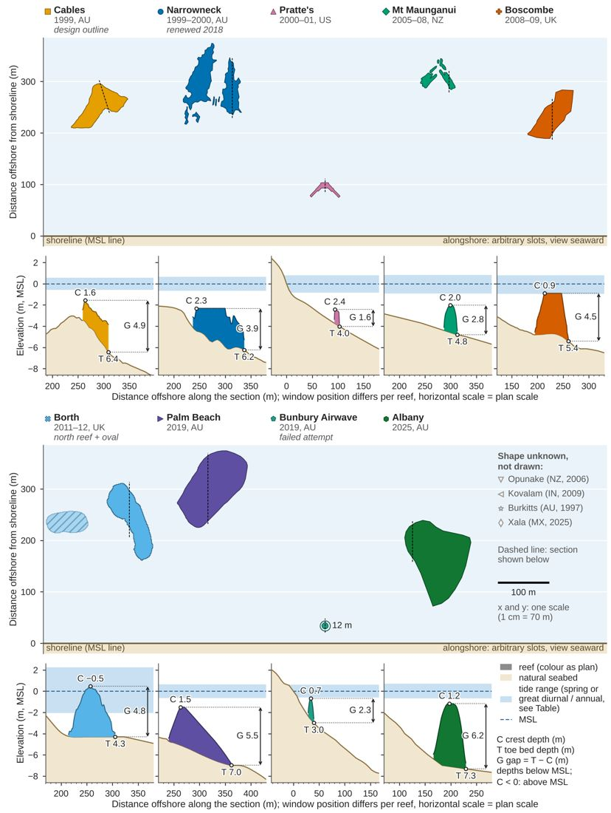
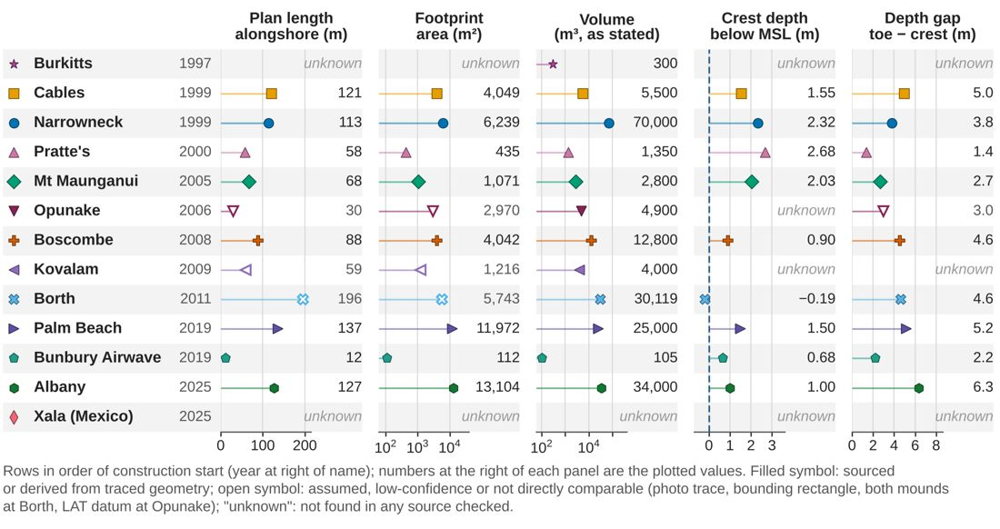
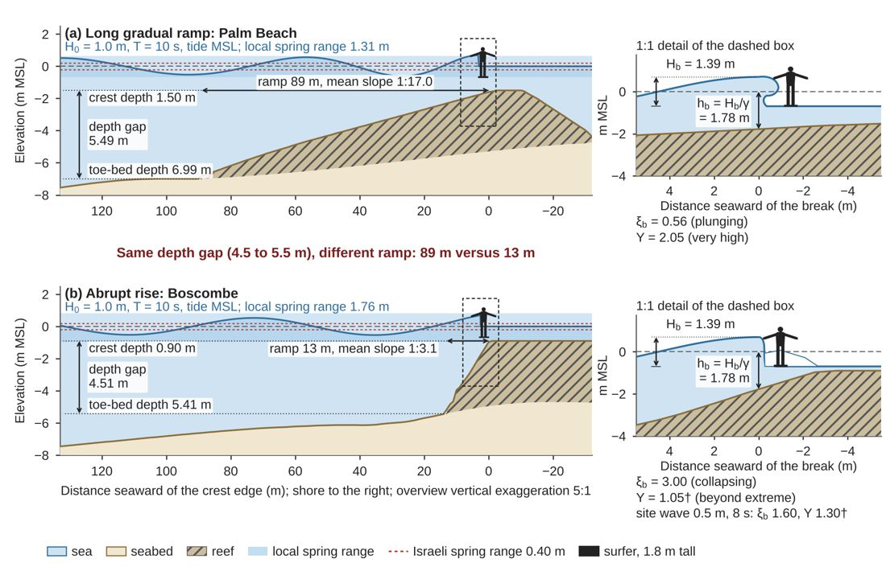
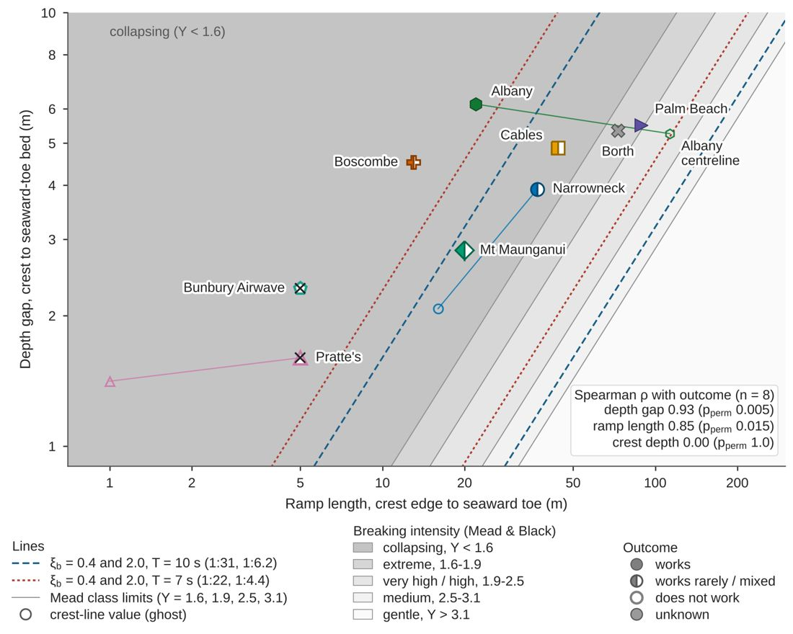
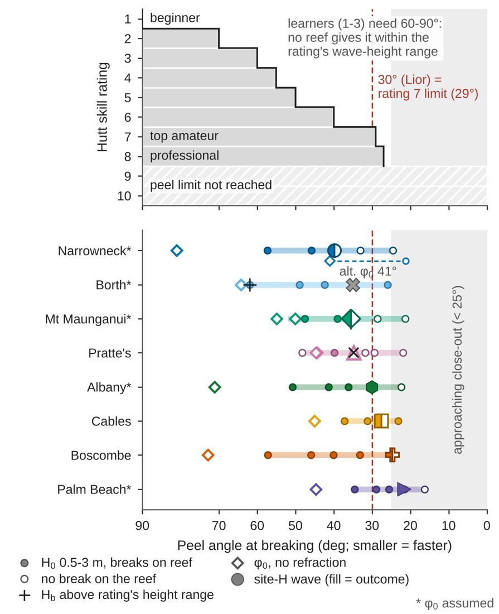
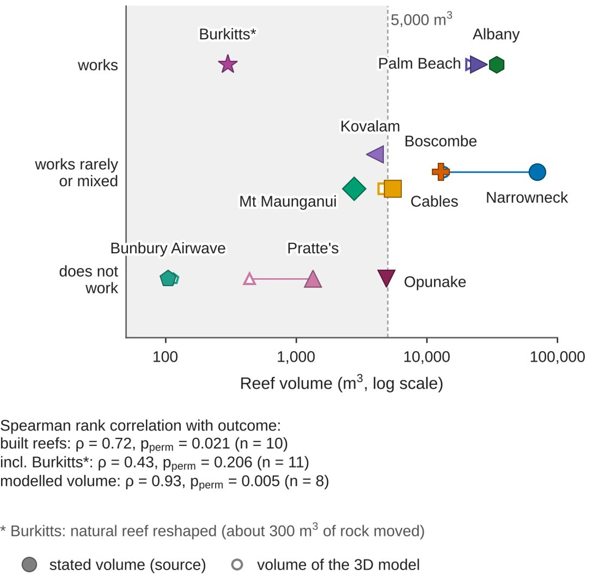
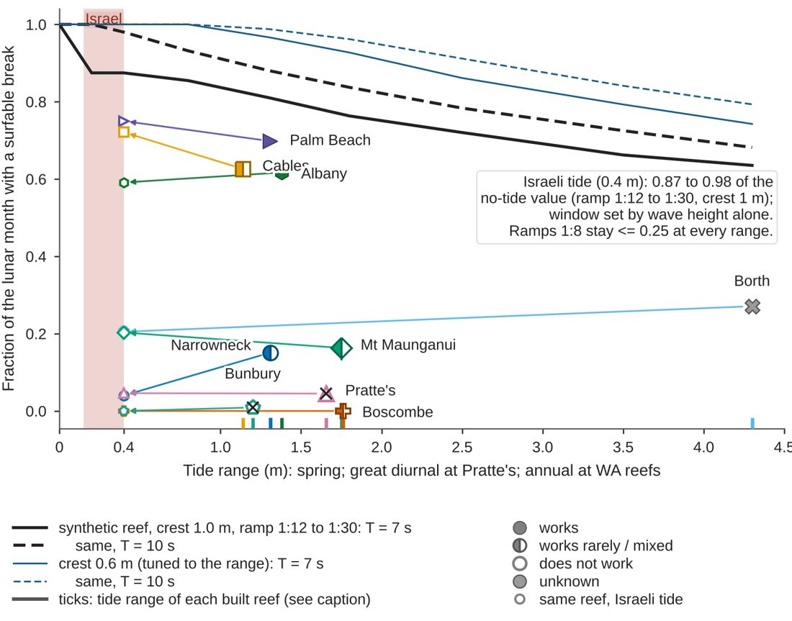
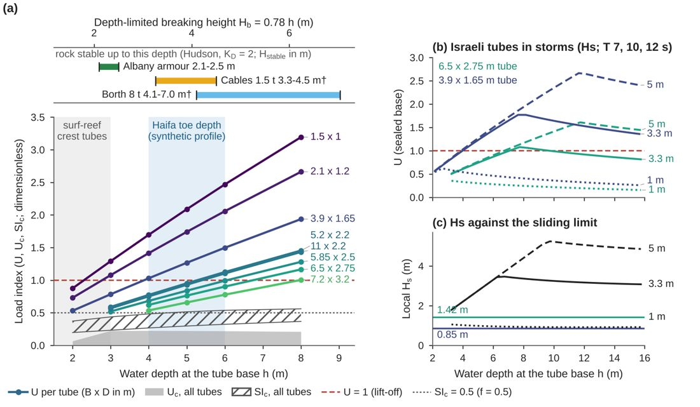
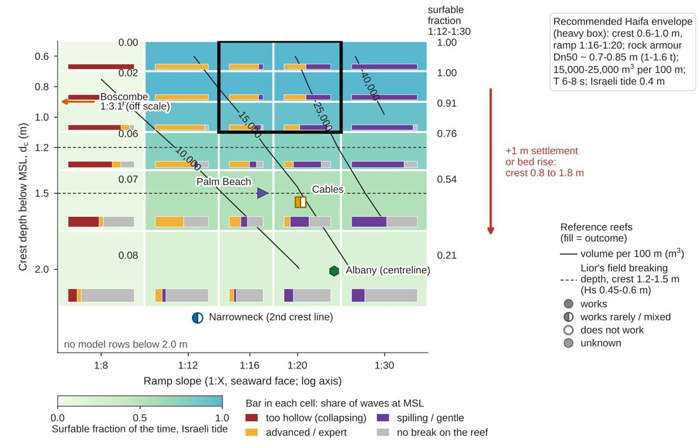

No reef matches these filters.
Section 2
Sediment transfer in Israel — in preparation
This section is being researched and verified. It will be added to this page when its sources have been checked.
Section 3
Conclusions for Haifa — in preparation
This section will draw on Sections 1 and 2 once both are complete.
Paper figures (this review, draft of 2026-10-19)
Our own figures from the paper work in 08_paper/figures/ (downscaled copies, click to enlarge; captions as written there). Tide bands in Figures 1 and 7 follow the 2026-10-19 tide check; the same ranges are in each reef's Quick facts (“Tide range (checked 2026-10-19)”). Sources of every number are in the paper notes and in the reef cards.

Figure 1. Plan shapes (upper part of each row) and cross-shore depth profiles (lower part) of the nine surf reefs whose outline is known, in order of construction; Opunake, Kovalam, Burkitts and Xala (Mexico) are not drawn because no outline could be traced. All plans share one metric scale in x and y (1 cm = 70 m at print width; 100 m bar at lower right), are viewed looking seaward (unmirrored), and each outline is set at its distance from the MSL shoreline (thick line, y = 0) with arbitrary alongshore slots; the hatched shape is Borth's southern oval, a shore-parallel breakwater rather than a surf reef, and Bunbury is the 12 m Airwave bladder, torn on installation. Each profile is the section of the 3D reconstruction marked by the dashed line (the section whose crest depth best matches the master table), drawn at the plan's horizontal scale (window shifted per reef) with a vertical exaggeration of about 21:1; elevations are relative to MSL, the blue band is the tide range (spring range MLWS-MHWS; great diurnal range MLLW-MHHW at Pratte's; predicted annual range, about LAT-HAT, of the 2026 WA DoT/BoM predictions at Cables 1.14 m, Bunbury 1.20 m and Albany 1.38 m, centred on MSL; see the tide-range table in Appendix C), and C, T and G are the crest depth, the seabed depth at the seaward toe and the depth gap (T - C) read from the plotted section, within 0.35 m of the master-table values.
--- Build and data notes (not part of the caption) - Files: `fig1_plan_and_profiles` (both rows, 17 x 22.6 cm); the same rows separately as `fig1_plan_and_profiles_rowA` and `_rowB` (17 x 11.3 cm each) if a full page is too tall. Code: `08_paper/analysis/figures_survey.py` (function `fig1`), palette in `08_paper/analysis/style.py`. - Plan outlines: DEFAULT outline of each `07_scale/shapes/<slug>/shape.json` (Cables: original design plan of Lyons 1992 as reproduced in Blacka et al. 2013 Fig. A.2, fitted to the Nov 1999 soundings; Narrowneck: container field on the Esri image of 8 Aug 2020; Pratte's: Skelly Engineering design drawing of the Phase I layout; Mount Maunganui: -2.0 m CD contour of the 18 Jul 2013 multibeam survey; Boscombe: outline traced on Esri World Imagery Wayback imagery (frame origin = surf line of 28 Sep 2011); Borth: Welsh Government LiDAR edge of 19 Mar 2022; Palm Beach: toe outline traced on the Bluecoast/Nearmap aerial of the completed reef; Bunbury: 12 m circle traced from the 2019 drone photo, orientation arbitrary; Albany: Bluecoast final-design outline). Per-reef sources and confidence: Appendix A, `shape.json` and `08_paper/data/profiles/<slug>.json`. - Frame: every `shape.json` frame is 'x alongshore, y offshore' with +y = +x turned 90 deg clockwise, so x is plotted as -x to give an unmirrored view looking seaward; the Cables frame has the other handedness (x north, y west) and its outline is rotated into the fitted 0 m AHD shoreline (bearing 7.8 deg; 254 m east of the anchor, `geo` block of its `shape.json`), so the axes there are exactly shore-parallel and shore-normal. Distance offshore = model y minus the model y at which the section's seabed crosses MSL (`y_msl_crossing_m`: Borth 90.6 m, Boscombe -8.0 m, Narrowneck -5.0 m, Albany -5.3 m, Bunbury 3.2 m; Cables: fitted shoreline, 3.1 m; Prattes, Mount Maunganui and Palm Beach 0). Shoreline definitions differ by reef (MSL waterline of an aerial image, wet/dry sand edge, back-of-beach line at Borth; `data/README.md`); differences below 30 m are noise. DERIVED. - Sections: `08_paper/data/profiles/<slug>.json`, lines: Cables crest_line, Narrowneck second_crest_line (south arm), Pratte's centreline (apex), Mount Maunganui second_crest_line, Boscombe crest_line, Borth centreline (northern reef), Palm Beach crest_line, Bunbury crest_line, Albany crest_line. Chosen as the line whose crest depth is closest to `crest_depth_msl_m` of `reefs.json`. The Cables section follows the design-frame y axis, about 17.5 deg off the shore normal (distances along the line, not shore-normal). Seabed under the reefs is interpolated except at Cables (1998 pre-construction survey); crest height and ramp slopes inherit the 3D-model assumptions (profiles/SUMMARY.md section 6). Datums: each model uses z = 0 at MSL with the conversions listed in `data/README.md` (Boscombe, Albany and Prattes depend on stated assumptions). - Tide band planes from the profile JSONs (`tidal_planes_m_above_msl`); the Cables, Bunbury and Albany bands (`ANN_LO`/`ANN_HI`) are the predicted annual range of the WA Department of Transport / BoM Tide Predictions by Location WA 2026 (heights above LAT; Fremantle +0.30 to +1.44 m, Bunbury +0.10 to +1.30 m, Albany +0.09 to +1.47 m), centred on MSL; three of four quarterly blocks were parsed, so they are lower bounds. They replace the earlier Cables +-0.4 m (Blacka et al. 2013 Table 4.3, definition not given) and the Bunbury/Albany MHHW-MLLW bands (0.4 and 0.6 m). Pratte's band is the NOAA great diurnal range (GT 1.654 m). Verification: `08_paper/notes/tides_check.md`. - Annotated C, T, G versus master table (max difference): C 0.27 m (Borth, Pratte's), T 0.32 m (Palm Beach), G 0.32 m (Palm Beach).

Figure 2. Size overview of the 13 surf-reef projects (in order of construction): plan length along the shore and footprint area of the traced outline, volume as stated by the sources (rock or sand fill, not one common quantity), crest depth below MSL (negative: crest above MSL, Borth) and depth gap between the seabed at the seaward toe and the crest. Open symbols mark assumed, low-confidence or not directly comparable values and 'unknown' means that no source checked gives the value; the four reefs without a traced shape (Opunake, Kovalam, Burkitts, Xala) therefore have no length or footprint. Values are those of the master table `08_paper/data/reefs.json` (sources and status of every value in Appendix C; reading of the outlines and 3D models in Appendix A; main sources include Blacka et al., 2013; Mead and Borrero, 2011; Rendle, 2016; Corbett et al., 2023); lengths, areas, crest depths and gaps are derived from traced outlines and 3D models, volumes are sourced except Borth and Bunbury (derived).
--- Build notes (not part of the caption): code `08_paper/analysis/figures_survey.py` (function `fig2`). Opunake gap (3.0 m) is relative to chart datum (LAT), design stage, and is plotted open. Borth footprint and length include the southern oval (both mounds). Narrowneck volume (70,000 m3) is the stated sand-fill volume, the footprint is the visible container field of 2020 (lower bound).

Figure 3. Shoaling and breaking over a long gradual ramp (a, Palm Beach, Gold Coast) and over an abrupt rise (b, Boscombe), both along the crest line of the reef's 3D model, drawn at one horizontal scale and with the same incident wave (H0 = 1.0 m, T = 10 s, normal incidence, mean sea level). The overview panels are vertically exaggerated 5:1 (sinusoids are linear shoaling, H = H0 Ks, Dean and Dalrymple, 1991; the wave breaks where H = γ d with γ = 0.78, McCowan, 1894, as given by Weggel, 1972), and the dashed boxes are enlarged 1:1 to show the breaker, the breaking depth h_b = H_b/γ = 1.78 m (H_b = 1.39 m in both panels) and a 1.8 m standing surfer; the lip and foam shapes are schematic, heights and positions are model values. A comparable depth gap from the crest to the seabed at the seaward toe (5.49 m and 4.51 m) spread over an 89 m ramp (mean slope 1:17) gives a plunging breaker with surf similarity ξ_b = 0.56 (Battjes, 1974) and a "very high" breaking intensity, Y = 2.05 (Mead and Black, 2001), whereas the 13 m ramp (1:3.1) gives a collapsing front with ξ_b = 3.00 and Y = 1.05†; under Boscombe's own typical sea (0.5 m, 8 s) ξ_b = 1.60 and Y = 1.30†. † Outside the 1:9 to 1:40 slope range of the Mead and Black (2001) fit, i.e. extrapolated; the blue band is the local spring tidal range (MLWS to MHWS) and the dashed red lines the Israeli spring range of 0.40 m (Rosen, 2001).
--- Build and data notes (not part of the caption) - Files: `fig3_wave_sketch.png` (300 dpi) and `.pdf` (vector), 17 x 10.9 cm. Code: `08_paper/analysis/figures_wave.py` (re-run: `python3 -I 08_paper/analysis/figures_wave.py`); palette and fonts from `style.py`. - Geometry: `08_paper/data/profiles/palm-beach-gold-coast.json` and `boscombe-surf-reef.json`, `lines.crest_line.profile` (seabed and reef surface, 1 m spacing, DERIVED from the 3D models: Palm Beach by contour interpolation, Boscombe idealised with a flat crest and 1:3 flanks) and `lines.crest_line.metrics` (crest depth 1.50 m / 0.90 m, seaward-toe bed 6.99 m / 5.41 m, depth gap 5.49 m / 4.51 m, ramp 89 m / 13 m, mean slope 1:17.0 / 1:3.1). The x axis is the distance seaward of the seaward edge of the crest zone (`crest_zone_y_m[1]`), where the ramp length of the metrics starts; the same scale is used in both panels (overview 16.2 m per cm horizontally and 3.2 m per cm vertically; detail 2.3 m per cm in both directions). - Break: `results_breaking.csv`, rows line = crest_line, H0 = 1.0 m, T = 10 s, tide = mid, gamma_mode = mccowan (Palm Beach: break 3.3 m seaward of the crest edge, d_b 1.78 m, H_b 1.39 m, tan β 0.053, ξ_b 0.56, Y 2.05, plunging; Boscombe: 2.5 m seaward, tan β 0.283, ξ_b 3.00, Y 1.05, surging/collapsing). The Boscombe site-wave values (0.5 m, 8 s) are from `results_surf_site.csv` (ξ_b 1.60, Y 1.30, on the crest edge). The same H0 and T were chosen for both panels (FIGURE_SPECS F3), so the Boscombe panel is not its typical sea. - Water surface: Airy dispersion and shoaling from `wavelib.py` (`wavenumber`, `shoaling_coefficient`), phase integrated from the break point seaward; wave height capped at γ d. Still water shoreward of the break (the broken wave is not modelled). Breaker class for the detail drawing: plunging when ξ_b is between 0.4 and 2.0 or when it is plunging by the table and Y >= 1.6 (Palm Beach); collapsing front otherwise (Boscombe, Y < 1.6). ASSUMPTION (graphic only): back of the wave a half cosine of 9 m, lip and foam drawn by hand. - Surfer: front-view pictogram, 1.8 m from feet to head (board end-on), drawn at true size in the 1:1 detail; in the 5:1 overview its height is true and its width is not exaggerated. - Tide planes: `tidal_planes_m_above_msl` of the profile files (MLWS/MHWS: Palm Beach -0.66/+0.65 m, spring range 1.31 m; Boscombe -0.95/+0.81 m, 1.76 m); Israel 0.40 m spring range (Rosen, 2001; `style` neutral colours).

Figure 4. Depth gap (crest to the seabed at the seaward toe) against ramp length (crest edge to toe) for the nine modelled reefs, on logarithmic axes so that lines of constant mean depth gradient, gap/length = 1/X, are straight. Symbol colour and shape identify the reef and the fill the outcome (filled: works; half: works rarely or mixed; open with a cross: does not work; grey: unknown); open ghost symbols give the crest-line value where it differs from the plotted representative line (Narrowneck 16 m and 2.08 m against 37 m and 3.92 m on its second crest line; Pratte's 1 m, a tip artefact, against 5 m) and the centreline of Albany (113 m, 5.26 m), whose crest line follows the oblique ridge (22 m, 6.15 m). Shading marks the Mead and Black (2001) breaking-intensity classes from Y = 0.065 X + 0.821 (Mead, 2000, Eq. 6.5; X = 12.0, 16.6, 25.8 and 35.1 at Y = 1.6, 1.9, 2.5 and 3.1), and the dashed and dotted lines the Iribarren limits ξ_b = 0.4 and 2.0 (Battjes, 1974; Lewis et al., 2015) for a breaking height of 1 m with T = 10 s and with T = 7 s, representative of Israeli seas. The gradient includes the natural bed slope between crest and toe, so it is steeper than the reef-face slope at some reefs (Cables 1:9 here against 1:20 on the face); geometry is idealised for six of the nine reefs and slopes follow the model y axis; the Spearman correlation of depth gap with the ordinal outcome (n = 8, Borth unknown) is ρ = 0.93 (permutation p = 0.005), of the crest-line ramp length 0.85 (0.015) and of crest depth 0.00 (1.0).
--- Build and data notes (not part of the caption) - Files: `fig4_gap_ramp.png` / `.pdf`, 14.5 x 11.6 cm. Code: `08_paper/analysis/figures_results.py` (function `fig4`; `python3 -I 08_paper/analysis/figures_results.py fig4`). - Data: `results_reef_summary.csv` columns `rep_ramp_length_m`, `rep_depth_gap_m` (plotted point), `ramp_length_m`, `depth_gap_crest_to_toe_bed_m` (crest-line ghost), `outcome`; Albany centreline from `08_paper/data/profiles/southern-ocean-surf-reef-albany.json` (`lines.centreline.metrics`: ramp 113 m, seaward-toe bed -7.271 m, crest -2.012 m, gap 5.259 m); correlations from `results_outcome_correlations.json` (keys `rep_depth_gap_m` 0.926 / 0.005, `ramp_length_m` 0.849 / 0.0153, `crest_depth_msl_m` 0.0 / 1.0, n = 8). With the plotted representative ramp length the correlation is 0.78 (p_perm 0.030, key `rep_ramp_length_m`). - Deviation from FIGURE_SPECS F4: both axes are logarithmic (y 0.9 to 10 m instead of linear 0 to 8) so that constant-slope bands are straight rays; the plotted points and band limits are those of the spec. Slope used for the bands is gap/length (the depth gradient of the wave path), not the reef-face slope listed in RESULTS section 2 (differs for Cables, Mt Maunganui, Narrowneck). - Iribarren lines: tan β = ξ sqrt(H/L0) with H = 1 m (breaking height, ASSUMPTION), L0 = g T^2/2π (156 m at 10 s, 76.5 m at 7 s): ξ_b = 0.4 at 1:31.2 (10 s) and 1:21.9 (7 s); ξ_b = 2.0 at 1:6.2 and 1:4.4. Fit range of the Mead and Black relation is X about 9-40, so everything steeper than 1:9 is extrapolated.

Figure 5. Peel angle at breaking and the surfer skill that can use it. Upper panel: the skill table of Hutt et al. (2001) as reproduced by Lewis et al. (2015) and Barlow (2013); a surfer of rating r can ride waves peeling at an angle of at least 90, 70, 60, 55, 50, 40, 29 and 27 degrees (ratings 1 to 8), and ratings 9 and 10 have no limit. Lower panel: for each reef the bar spans the peel angle at the site period for incident heights H0 = 0.5 to 3 m (dots; open dots: the wave does not break on the reef), obtained from the angle φ0 between the incident crest and the reef arm and refracted to the break depth by Snell's law without diffraction (diamonds: φ0, unrefracted); the large symbol is the site-wave value (fill: outcome), and + marks a case whose breaking height lies above the Hutt height range of its rating (Borth at H0 = 3 m reaches 62° but breaks at 3.2 m, above the 2.5 m limit of rating 3). The angle φ0 is assumed for five of the eight reefs (*; dashed: the alternative of 41° for Narrowneck), the grey zone below 25° approaches close-out (Mead and Black, 2001, as cited by Lewis et al., 2015), and the red line is the 30° that the author associates with good surfers, which corresponds to the limit of rating 7 (29°).
--- Build and data notes (not part of the caption) - Files: `fig5_peel_skill.png` / `.pdf`, 9.6 x 11.8 cm (one column plus margin). Code: `figures_results.py` (function `fig5`). - Data: Hutt limits from `wavelib.HUTT`; reef values from `results_peel.csv` filtered to T = site T (`results_surf.json` meta.site_inputs[slug].T: Narrowneck 10, Palm Beach 10, Cables 12, Mt Maunganui 11, Pratte's 6, Boscombe 8, Borth 8, Albany 13 s) and phi0_src not starting with "ALT"; both arms of the two-arm reefs are pooled (min/max); site-wave marker `peel_alpha_snell_deg` of `results_reef_summary.csv` (H0 used: column `peel_H0_used`). Alpha ranges (deg): Narrowneck 24.5-57.3, Borth 25.9-61.9, Mt Maunganui 21.3-51.9, Pratte's 21.8-48.3, Albany 22.4-50.8, Cables 23.2-37.3, Boscombe 24.6-57.2, Palm Beach 16.2-34.6. Bunbury is omitted (dome, no arm). - Learner statement: no on-reef case reaches rating 1-2 (90 and 70 degrees); the only case at or above 60 degrees is Borth at H0 = 3 m (61.9 degrees, rating 3, but H_b 3.18 m outside the 0.6-2.5 m height range of rating 3). FINDINGS.md item 4 says "no reef reaches 60 deg or more"; with this one qualified exception the statement holds for the height-valid cases. - phi0 ASSUMED (`phi0_src`): Narrowneck, Palm Beach, Mt Maunganui, Borth, Albany; SOURCED design angle: Cables; DERIVED from the design drawing: Pratte's, Boscombe.

Figure 6. Reef volume against outcome for the eleven projects with a known outcome (filled symbols: volume stated in the sources; open symbols joined by a line: volume of the reconstructed 3D model, which differs most at Narrowneck, 70,000 against 13,496 m³). The three reefs that do not work are 4,900 m³ or smaller (Bunbury 105, Pratte's 1,350, Opunake 4,900 m³) and both built reefs that work (Palm Beach 25,000 and Albany 34,000 m³) are 25,000 m³ or larger; Burkitts (*) works at 300 m³ because it is a natural reef reshaped by moving about 300 m³ of rock, so volume matters when the reef has to create the whole relief. The Spearman rank correlation with the ordinal outcome (works 3, works rarely or mixed 2, does not work 1) is ρ = 0.72 (permutation p = 0.021, n = 10) for the stated volume of the built reefs, 0.43 (p = 0.21, n = 11) when Burkitts is included and 0.93 (p = 0.005, n = 8) for the model volume; the sample is small, the outcome is a judgement and volume is collinear with material (the large reefs are recent rock reefs) and budget, so the association is descriptive only (Blacka et al., 2013; Mead and Borrero, 2011; Corbett et al., 2023 and the sources listed in Appendix C).
--- Build and data notes (not part of the caption) - Files: `fig6_volume_outcome.png` / `.pdf`, 9.6 x 9.4 cm. Code: `figures_results.py` (function `fig6`). - Data: `results_volume_outcome.csv` (slug, outcome, score, volume_stated_m3, volume_source; 11 rows incl. Burkitts and Kovalam, Opunake which are not modelled) and `results_reef_summary.csv` column `volume_model_m3` (Narrowneck 13,496; Palm Beach 21,948; Cables 4,683; Mt Maunganui 2,943; Pratte's 442; Boscombe 13,112; Albany 33,999; Bunbury 116 m3; Borth has no known outcome and is omitted). Correlations: `results_outcome_correlations.json` (`volume_stated_all_reefs.built_reefs_excl_burkitts` 0.724 / p_perm 0.0212 / n 10; `all_incl_burkitts_natural` 0.428 / 0.2063 / n 11; `corr.volume_model_m3` 0.926 / 0.005 / n 8). - Outcome classes are `reefs.json` `surf_outcome` (cited there). Points at the same outcome row are separated by a vertical offset of 0.16 for Mt Maunganui / Kovalam / Cables only (graphic; no data meaning). The 5,000 m3 line is a visual guide (largest "does not work" reef 4,900 m3), not a fitted threshold.

Figure 7. Fraction of the lunar month during which a reef gives a surfable break, given that the swell is present, as a function of the tide range (spring range; great diurnal range at Pratte's; predicted annual range of 2026 at the Western Australian reefs Cables, Bunbury and Albany). Lines: a synthetic Haifa-type reef (1:50 bed, crest 10 m wide; ramps from 1:12 to 1:30 give identical fractions), mean over incident heights H0 = 0.6 to 1.5 m, for a crest 1.0 m below MSL (black) and for the crest depth that is best at each range (0.6 m, blue), at T = 7 s (solid) and 10 s (dashed); a break counts as surfable when it occurs on the ramp or crest with ξ_b < 2 and Y ≥ 1.6 (Battjes, 1974; Mead and Black, 2001), on a synthetic semidiurnal tide modulated between neap and spring. Symbols: the nine modelled reefs, each at its own tide range (ticks on the lower axis) and surfable fraction (mean over H0 = 0.5 to 2 m, best default section; fill: outcome), joined by an arrow to the same geometry and swell under the Israeli tide (spring 0.40 m, neap 0.15 m; Rosen, 2001; shaded band). The Israeli tide leaves 0.87 (T = 7 s) to 0.98 (T = 10 s) of the no-tide value for the synthetic reef but does not raise the mean surfable time of the built reefs (mean change +0.01); it makes the break a function of wave height alone. The fractions are shares of the time with suitable swell, not days per year, because no wave climate is included.
--- Build and data notes (not part of the caption) - Files: `fig7_tide_window.png` / `.pdf`, 13.0 x 10.2 cm. Code: `figures_results.py` (function `fig7`). - Data: lines from `results_tide_range_summary.csv` (columns `mean_frac_surfable_dc1p0`, `mean_frac_surfable_best_dc`, ramp 12 plotted; ramps 12, 20 and 30 are identical in the file; ramp 1:8 stays at or below 0.25 and is only quoted in the text box); built-reef points from `results_reef_summary.csv` (`spring_range_m`, `surfable_frac_best_line`, `surfable_frac_israeli_tide_best_line`): Palm Beach 1.31 m 0.70 -> 0.75; Cables 0.80 m 0.65 -> 0.72; Albany 0.60 m 0.59 -> 0.59; Borth 4.30 m 0.27 -> 0.20; Mt Maunganui 1.75 m 0.16 -> 0.20; Narrowneck 1.31 m 0.15 -> 0.04; Pratte's 1.65 m 0.045 -> 0.046; Boscombe 1.76 m 0 -> 0; Bunbury 0.40 m 0 -> 0. - Israeli band 0.15 to 0.40 m: neap and spring range of Rosen (2001) (`LiorBuoy2025` and `Rosen2001` in `wavelib.REFS`). The Israeli end markers are plotted at x = 0.40 m as in FIGURE_SPECS F7; markers of different reefs overlap there (Palm Beach and Cables, Mt Maunganui and Borth, Narrowneck and Pratte's). - Method and limits: RESULTS section 5 (water level stepped every 0.02 m; sinusoidal M2-type tide, no diurnal inequality; no surge; no refraction).

Figure 8. Estimated load on sand-filled geotextile tubes and rock in the breaking zone (an estimate; tearing is not modelled). (a) Sealed-base uplift U, the maximum vertical force over the wave cycle divided by the submerged weight (an upper bound; one line per tube size B x D in m), under depth-limited breakers (H_b = 0.78 h, maximum over T = 6, 9 and 12 s), with the ranges of the uplift U_c if the wave pressure reaches the base (grey, at most 0.22) and of the calibrated sliding index SI_c (hatched, 0.20 to 0.56); interpolated, tubes of 1.0 to 1.65 m height reach U = 1 at base depths of 2.3 to 3.9 m and tubes of 2.2 to 3.2 m at 5.3 to 8.0 m, and the bars above give the depth to which rock of the Albany, Cables and Borth reefs stays stable under depth-limited breaking (Hudson formula with K_D = 2; † extrapolated beyond a 1:5 face). (b) U for the Israeli 6.5 x 2.75 m and 3.9 x 1.65 m tubes in storms of Hs = 1, 3.3 and 5 m (T = 7, 10 and 12 s; H_max = min(1.8 Hs Ks, 0.78 h)) and (c) the local Hs, limited to 0.55 h, against the single-tube sliding limit of van Steeg et al. (2011), 1.42 and 0.85 m. Forces come from a linear Froude-Krylov model of a rigid superellipse section calibrated against the values read from Bar and Drimer (2023) (factor 1.42 on the sliding index SI in the linear range; 0.94 on SI and 2.24 on SI_c near breaking), not their BELWF model; the real behaviour lies between the sealed and the open base, and single tubes are less stable than interlocking mounds.
--- Build and data notes (not part of the caption) - Files: `fig8_stability.png` / `.pdf`, 17 x 9.9 cm. Code: `figures_results.py` (function `fig8`). Panels: (a) with the rock strip above it, (b), (c). FIGURE_SPECS F8 proposed two panels with per-tube dotted and dash-dot lines; the three load indices are drawn here as envelopes (U_c and SI_c over all nine tube cases) to keep the figure readable, and the Hs comparison is a separate panel (c). - Data: (a) `results_stability_fk.csv` rows `at_break` = True (6 depths x 3 periods), maximum over T per (B, D, h); tubes: Mt Maunganui small 1.5 x 1.0, Pratte's bag 2.1 x 1.2, Narrowneck small and Israeli 3 m tube 3.9 x 1.65, Boscombe container 5.2 x 2.2, BD23 design tube 11 x 2.2, Narrowneck large 5.85 x 2.5, Israeli 5 m tube 6.5 x 2.75, Mt Maunganui large 7.2 x 3.2. Uplift U = `uplift_fraction`; U_c = `uplift_fraction_contact`; SI_c = `SIc_calibrated`. Lift-off depths (linear interpolation of U = 1): 1.5 x 1.0 2.3 m; 2.1 x 1.2 2.8 m; 3.9 x 1.65 3.9 m; 5.2 x 2.2 5.3 m; 11 x 2.2 5.4 m; 5.85 x 2.5 6.1 m; 6.5 x 2.75 6.8 m; 7.2 x 3.2 8.0 m. Rock: `results_stability_rock.csv` (Albany armour D50 0.94 m, H_stable 2.1-2.5 m; Cables 1.5 t body granite 3.3-4.5 m, extrapolated; Borth 8 t 4.1-7.0 m, partly extrapolated; bar position = depth where 0.78 h equals H_stable). (b), (c) `results_stability_israel_depth.csv` (`uplift_fraction`, `Hs_local`, `Hs_crit_vansteeg` 1.417 and 0.850 m). Calibration factors: `results_fk_calibration.json`. - Status of the model: ESTIMATE (calibrated linear Froude-Krylov, RESULTS section 8.2), not the BELWF model of Bar and Drimer (2023); fabric stress, tearing, breaking-wave impact, drag and inertia are not modelled; friction f = 0.5 and rho_fill 2,082 kg/m3 are assumptions or values of Bar and Drimer (2023) p. 6. The "Drimer 2026" paper cited by the author was not found.

Figure 9. Design envelope for a surf reef at Haifa on a synthetic 1:50 bed (1:70 gives the same result; no Haifa bathymetry is available), as a function of crest depth below MSL and seaward ramp slope (crest 10 m wide, back slope 1:3). Cell colour is the fraction of the time the break is surfable under the Israeli tide (spring range 0.40 m; the same for ramps from 1:12 to 1:30 and falling with crest depth), the bar in each cell the share of waves (H0 = 0.6 to 1.5 m, T = 6 to 8 s, at MSL) that are too hollow, advanced or expert, spilling or gentle, or do not break on the reef (classes from ξ_b and Y after Battjes, 1974, and Mead and Black, 2001), and the contours the reef volume per 100 m of length (10,000, 15,000, 25,000 and 40,000 m³). The heavy box is the recommended envelope (crest 0.6 to 1.0 m, ramp 1:16 to 1:20, 15,000 to 25,000 m³ per 100 m, rock armour Dn50 of about 0.7 to 0.85 m); the arrow shows 1 m of settlement or seasonal bed rise (crest 0.8 to 1.8 m), the dashed lines the crest depths implied by the author's field breaking depths (Hs 0.45 to 0.60 m), and the symbols the built reefs by crest depth and mean seaward slope (Palm Beach, Cables, Albany centreline, Narrowneck second crest line; Boscombe, 1:3.1, is off the scale). The model is one-dimensional linear shoaling with γ = 0.78 and no refraction or focusing, so the envelope is a first screening and needs a Haifa wave climate and a two-dimensional wave model or flume test.
--- Build and data notes (not part of the caption) - Files: `fig9_haifa_envelope.png` / `.pdf`, 17 x 10.9 cm. Code: `figures_results.py` (function `fig9`). - Data: `results_israel_design_summary.csv` rows `bed_one_in` = 50 (`mean_frac_surfable_israeli`, shares `share_too_hollow_msl`, `share_advanced_or_expert_msl` (+ `share_intermediate_msl`, 0 in all cells), `share_spilling_or_gentle_msl`, `share_not_on_reef_msl`, `volume_per_100m_m3`); cell values at d_c 0.6 to 2.0 m: fraction 1.00, 1.00, 0.91, 0.76, 0.54, 0.21 for ramps 1:12 to 1:30 and 0.00 to 0.08 for 1:8. Burial arrow: `results_israel_burial.csv` (crest 0.8 m -> 1.8 m after 1 m; Hb needed 0.62 -> 1.40 m); the 1 m seasonal bed change is the author's unsourced observation (notes/israel.md derives 0.3 to 1.3 m). Reference reefs: `results_reef_summary.csv` (Palm Beach 1.50 m, 1:17.0; Cables 1.56 m, 1:20.3; Narrowneck second crest line 2.32 m, 1:12.5; Boscombe 0.90 m, 1:3.1) and the Albany centreline from `08_paper/data/profiles/southern-ocean-surf-reef-albany.json` (2.01 m, 1:23.7). - Envelope logic and numbers: RESULTS section 10 (crest <= 1.0 m for at least 90 % of 0.6 to 1.5 m waves to break on the reef; ramp 1:16 to 1:20 advanced/spilling mix; 10,000 to 25,000 m3 per 100 m for 1:12 to 1:20; rock armour from Hudson with K_D = 2, DERIVED and extrapolated beyond a 1:5 face). Cell edges are geometric (ramp) and arithmetic (crest depth) midpoints of the model grid; contours are linear interpolation between the 30 model cases. The deeper crest depths 1.2 to 1.5 m would be allowed if the author's field breaking depths hold (largest open uncertainty). - Open: the figure uses the synthetic straight ramp; real profiles (Appendix A) are curved and refraction would change peel and break position.
References index
Every reference cited on this page, grouped by reef. Numbers (R1, R2…) are per reef and match the superscripts in each reef's detail view.